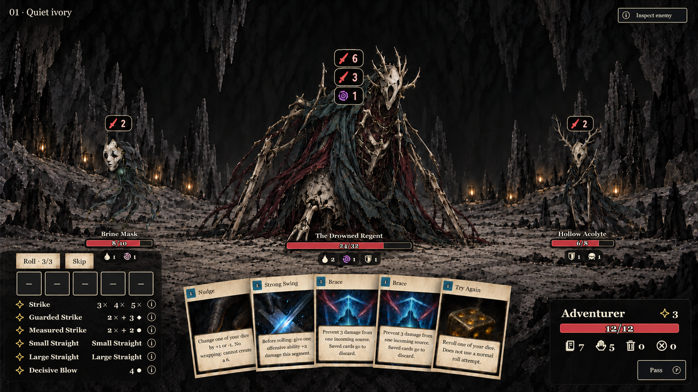
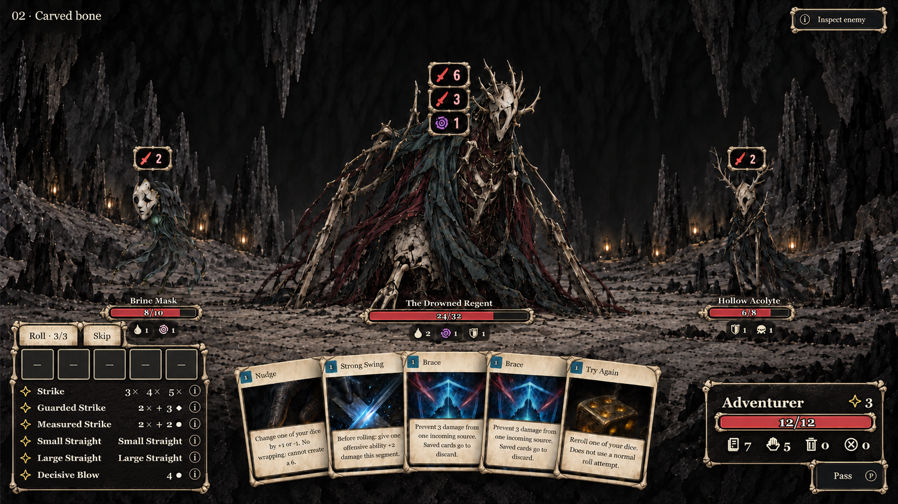
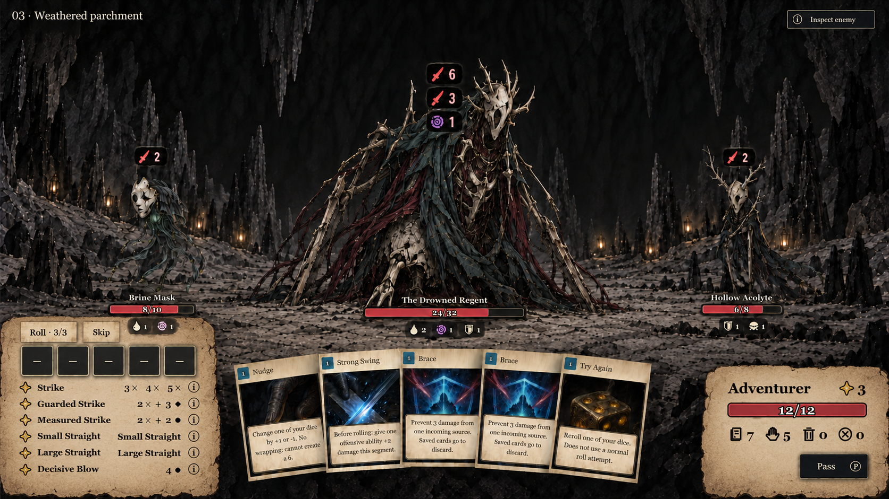
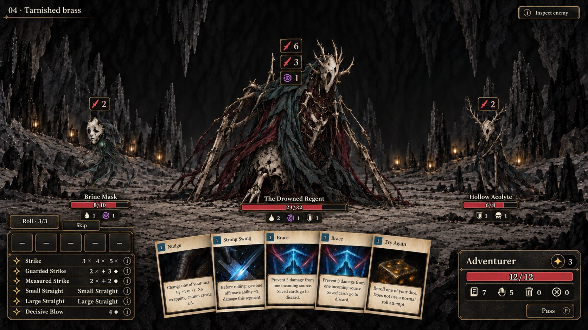
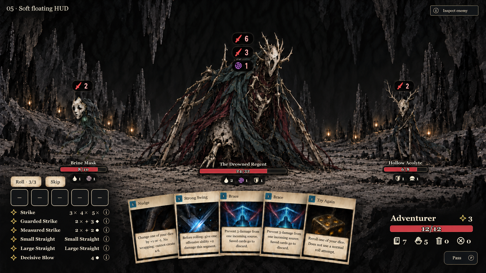

01 · Quiet ivoryThin ivory outlines and discreet dark backing.Download full-resolution PNG
02 · Carved boneBone frames and leather texture for a more tactile HUD.Download full-resolution PNG
03 · Weathered parchmentWarm paper panels that echo the hand cards.Download full-resolution PNG
04 · Tarnished brassSmoked metal, brass rules and aligned ability rows.Download full-resolution PNG
05 · Soft floating HUDMinimal framing, rounded badges and softer backing.Download full-resolution PNG